AutoAgents：自动 Agent 生成框架
现有 LLM 多智能体系统大多依赖人工预定义的固定角色，难以适配多样任务且手工构建专家成本高。AutoAgents 提出按任务内容自动生成专家 Agent 团队与执行计划的框架：Drafting 阶段由 Planner 与 Agent Observer、Plan Observer 多轮讨论，产出含 prompt、描述、工具集与建议的标准化角色列表及分步执行计划；Execution 阶段由 Action Observer 以垂直通信协调分工，通过 self-refinement 与 collaborative refinement 两类动作执行，并用短期/长期/动态三层记忆应对 token 限制。实验显示其在 MT-bench 开放式问答上胜率超过 GPT-4 等单模型，Trivia Creative Writing 上较 Standard 方法提升约 10%，消融证明 Observer 讨论、self-refinement、collaborative refinement 与 dynamic memory 分别贡献 3%、3%、2%、1%。对团队而言，这是'按任务动态编排 Agent 团队'的代表性架构参考，其角色 JSON 模板、Observer 校验回路与分层记忆设计可直接迁移到内部多 Agent 编排与提示词资产管理。
现有 LLM 多智能体方法大多依赖人工手工设计或用户指定的预定义 Agent（固定角色、需人工监督），限制了协作应用的范围，且手工创建大量专家角色消耗大量资源；论文旨在探索按任务内容自适应生成任务专家、并通过多专家多级协作完成不同任务的方法。
两阶段框架。Drafting Stage：由三个预定义 Agent（Planner、Agent Observer、Plan Observer）协作，Planner 生成初始 Agent 团队与执行计划，两个 Observer 分别校验角色规格/任务匹配性/冗余缺失与计划完整性，经多轮双向对话迭代收敛；每个 Agent 以 {prompt P, description D, toolset T, suggestions S} 标准格式定义。Execution Stage：预定义 Action Observer 作为队长，采用垂直通信范式按角色分工协调；任务执行含单 Agent 的 self-refinement（借鉴 AutoGPT/ReAct 的思考-计划-执行-反馈循环）与多 Agent 按固定顺序轮流执行的 collaborative refinement；知识共享采用 short-term/long-term/dynamic memory 三层记忆机制以应对 LLM token 限制，其中 dynamic memory 由 Action Observer 从长期记忆中抽取关键信息注入后续动作。执行环境基于 MetaGPT 的 environment 与 workspace 构建。
Trivia Creative Writing（N=5 与 N=10 各 100 实例、共 1000 题）：相比不使用 Agent Generation 的 Standard 方法，AutoAgents 在所有实验中取得约 10% 的提升，并超过同样采用 agent generation 的 SSP
Open-ended Question Answer（MT-bench 80 题）：AutoAgents 在 FairEval 与人工评测的 Win Rate 上均超过 Vicuna-13B、ChatGPT 与 GPT-4（正文未给出具体胜率数值）
消融实验（Trivia Creative Writing 20 实例）：去掉 Drafting 阶段 Observer 协作讨论性能下降 3%；去掉 self-refinement 下降 3%；去掉 collaborative refinement 下降 2%；去掉 dynamic memory 下降 1%
案例研究（定性）：自动生成游戏设计专家、UI 设计专家、程序员、调试专家等角色，完成 Python 版 Tetris 游戏开发
与 MetaGPT、AutoGen、Camel 等依赖手工/用户指定固定角色的多智能体框架不同，AutoAgents 按任务动态生成 Agent 团队；与同样支持自动生成 Agent 的 SSP、AgentVerse 相比，更强调生成 Agent 与计划的可靠性——通过 Planner 与双 Observer 的协作讨论、self-refinement 与 collaborative refinement 提升执行质量，且用单一统一 prompt 格式适配多种任务，无需像 AgentVerse/SSP 那样为不同任务做 task-specific 增强。
相关度级别：high
命中能力域：3.4 多智能体协作 | 3.3 Agent 架构与工具使用 | 3.1 上下文工程与记忆 | 3.2 提示工程
理由：论文直接命中团队多个核心能力域：3.4 多智能体协作（动态生成 Agent 团队、垂直通信范式、任务分解与 Observer 协调是框架核心贡献）；3.3 Agent 架构与工具使用（角色以 prompt+description+toolset+suggestions 标准化定义、self-refinement 借鉴 ReAct/AutoGPT、计划与反思机制）；3.1 上下文工程与记忆（short-term/long-term/dynamic memory 三层机制专门应对多 Agent 长流程中的 token 限制与信息筛选）；3.2 提示工程（Planner 自动为每个新角色生成 prompt 模板，并以统一 prompt 格式适配多任务）。对聚焦'如何把模型用好'的团队而言，这是多 Agent 编排模式的直接工程参考。
建议动作：深入精读并做内部分享
arXiv:2309.17288v3 [cs.AI] 2024年4月29日
Guangyao Chen 1 ∗ , Siwei Dong 1 ∗ , Yu Shu 1 ∗ , Ge Zhang 4 , Jaward Sesay 3 , Börje Karlsson 3 , Jie Fu 2 † , Yemin Shi 1 †
1 北京大学
2 香港科技大学
3 北京智源人工智能研究院
4 滑铁卢大学
gy.chen@pku.edu.cn , ymshi@pku.edu.cn , jiefu@ust.hk
大语言模型（LLMs）推动了多智能体系统在自动化任务求解方面的显著进展。然而，现有的大多数基于 LLM 的多智能体方法依赖预定义的智能体来处理简单任务，限制了多智能体协作对不同场景的适应性。因此，我们提出了 AutoAgents，这是一个创新框架，能够根据不同任务自适应地生成并协调多个专业化智能体，以构建一个 AI 团队。具体而言，AutoAgents 通过基于任务内容动态生成多个所需智能体，并基于生成的专家智能体为当前任务规划解决方案，从而将任务与角色之间的关系耦合起来。多个专业化智能体相互协作，以高效完成任务。同时，该框架引入了一个观察者角色，用于反思既定计划和智能体的响应并对其加以改进。我们在多个基准测试（benchmark）上的实验表明，AutoAgents 生成的解决方案比现有多智能体方法更加连贯和准确。这凸显了为不同任务分配不同角色以及团队协作的重要性，为应对复杂任务提供了新的视角。本项目的代码仓库可在 https://github.com/Link-AGI/AutoAgents 获取。
大型语言模型（Large Language Models, LLMs）作为多才多艺的任务求解智能体（Agent），展现出惊人的能力 [26, 22, 29]，它们被赋予了丰富的知识与技能。然而，在处理各种需要密集知识与推理的任务时，它们仍然面临困难 [26, 22, 2]，例如避免幻觉 [19]、采用慢思考策略 [30]、确保可信性 [32]，以及融合多样的领域知识与长程规划。相比之下，人类常常利用协作式问题求解的优势，这使他们能够有效地协同工作，解决不同领域中的非常规问题，并通过在各专业之间分配工作负载、运用多样化的视角与专业知识来提升解决方案的质量与可靠性 [21, 27, 1]。
受协作式问题求解的启发，近期的一些工作 [34, 7, 17, 11] 通过引入多智能体讨论提升了 LLM 的任务求解能力。然而，这些多智能体系统大多依赖于手工构建或由用户指定的 Agent，它们具有特定的角色并需要人工监督，这往往限制了协作应用的范围。此外，手动创建大量专家通常会消耗大量资源。为了自适应地解决更复杂的问题，本文旨在探索一种自适应生成任务专家、并通过多个专家之间的多层次协作配合来完成不同任务的方法。
∗ 同等贡献
† 通讯作者。
| Framework | Dynamic Agent Generation Method | Number of Agent | Multi-agent Conversation | Self-Refinement Action | Collaborative Refinement Action |
|---|---|---|---|---|---|
| AutoGPT [10] BabyAGI [20] Generative Agents [23] Camel [16] GPT-bargaining [8] MetaGPT [12] AutoGen [37] Social Simulacra [24] Epidemic Modeling [35] ExpertPrompting [38] SSP [34] AgentVerse [5] AutoAgents | Single Agent Single Agent Single Agent Single Agent Single Agent Multi-agent Discussion | 1 3 25 2 3 Unlimited Unlimited Unlimited Unlimited 1 Unlimited Unlimited Unlimited |
| Framework | Dynamic Agent Generation Method | Number of Agent | Multi-agent Conversation | Self-Refinement Action | Collaborative Refinement Action |
在本文中，我们提出了 AutoAgents，这是一个创新框架，能够根据不同任务自适应地生成并协调多个专业化 Agent，从而构建一个 AI 团队。图 1 给出了 AutoAgents 的高层概览。通过生成多个具有不同专家角色的 Agent，我们旨在形成一个协作实体，该实体能够借助每个 Agent 的互补优势来完成复杂任务。如图 2 所示，AutoAgents 的流程分为两个关键阶段：起草阶段（Drafting Stage）和执行阶段（Execution Stage）。起草阶段包含三个预定义 Agent（Planner、Agent Observer 和 Plan Observer）之间的协作讨论，以综合出适合输入问题或任务的定制化 Agent 团队与执行计划。执行阶段通过 Agent 间的协作与反馈对计划加以完善，并产出最终结果。我们提出了由单个 Agent 进行的自我完善（self-refinement）以及由多个 Agent 进行的协作完善，以提升 Agent 的熟练程度并促进 Agent 之间的知识共享。为了促进所综合团队中各 Agent 之间的具体分工，我们引入了一个预定义 Agent（Action Observer），以协助 Agent 团队共享信息、协调行动、达成共识并适应环境。
综合来自不同领域的异构信息往往是创意产业及其他现实场景中的一项关键需求。我们在图 1 中展示了一个具体示例，说明 AutoAgents 如何应对撰写一篇关于人工智能觉醒的小说这一具有挑战性的任务。故事规划者（Story Planner）和研究者（Researcher）凭借各自的专业知识协作构思故事情节，而角色开发者（Character Developer）和作家（Writer）则基于故事通过想象力丰富小说内容。此外，我们在复杂任务上开展了定量实验和案例研究，以证明 AutoAgents 的有效性。我们还进行了全面分析，展示了动态智能体对于处理复杂任务的重要性、自我完善对于熟练智能体的不可或缺性，以及协作对话的有效性。
总而言之，本文做出了以下新颖贡献：首先，我们提出了 AutoAgents，这是一个新颖的框架，能够动态地综合并协调多个专家智能体，为不同任务组建定制化的 AI 团队。其次，我们在两项具有挑战性的任务上开展了严格的定量实验，证明 AutoAgents 显著提升了大语言模型（LLM）的知识获取能力和推理能力，并优于其他智能体生成框架。第三，我们通过将 AutoAgents 应用于软件开发等多种场景，展示了其适应复杂任务的能力。最后，我们进行了深入调研，揭示了动态智能体对于应对复杂任务的重要性、自我完善对于熟练智能体的必要性，以及协作对话的效用。
基于 LLM 的自主智能体。LLM 已被广泛用作能够完成特定目标的自主智能体的核心控制器。Auto-GPT [10] 是一项早期工作，它将 LLM 用作 AI 智能体，可在多种工具的辅助下自主实现给定目标。然而，Auto-GPT 不支持多智能体协作，只能孤立地工作。增强 LLM 任务解决能力的一种方式是为多个 LLM 分配不同的角色和职责，并让它们协调各自的行动以实现共同目标。例如，BabyAGI [20] 是一个由 AI 驱动的任务管理系统，包含多个基于 LLM 的智能体。其中一个智能体根据前一个任务的目标和结果创建新任务，另一个智能体对任务列表进行优先级排序，还有一个智能体负责完成任务。BabyAGI 是一个智能体通信顺序固定的多智能体系统。MetaGPT [12] 是一个多智能体框架，用于为 GPT 分配不同角色，以形成面向复杂任务的协作式软件实体。它是一个专门面向协作软件开发、基于 LLM 的多智能体框架。Camel [16] 是一个基于 LLM 的通信智能体框架，展示了如何利用角色扮演使聊天智能体相互通信以完成任务。然而，Camel 不支持工具调用。近期的一些工作 [34, 7, 17, 11, 31, 15] 通过引入多智能体讨论增强了 LLM 的任务解决能力。例如，[34] 提出了一种多智能体辩论系统，允许 LLM 对给定论点进行支持或反驳的辩论，并生成辩论总结。[7] 提出了一种多智能体对话系统，使 LLM 能够就给定主题交换信息和观点，并生成对话报告。AutoGen [37] 是一个利用多个能够相互对话以解决任务的智能体来开发 LLM 应用的框架。然而，这些多智能体系统大多依赖于具有特定角色的手工构建或用户指定的智能体，不支持智能体的自动生成，这往往限制了协作应用的范围。
2
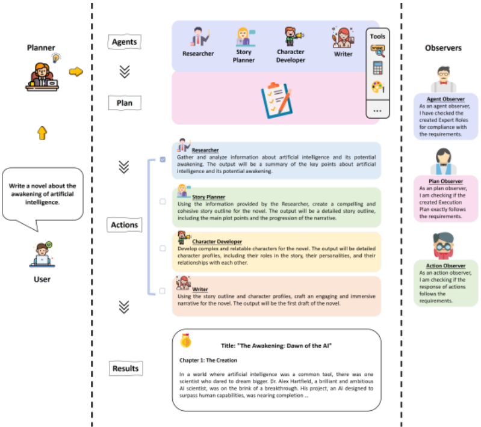
3
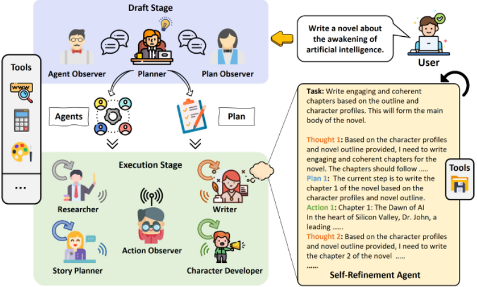
智能体泛化。若干研究工作 [24, 35] 利用大语言模型（LLM）生成用于社会模拟和流行病建模的智能体，展示了这一技术如何帮助设计者在将建模设计部署给真实用户之前对其进行评估和改进。类似地，ExpertPrompting [38] 设计了一种方法，用于生成多样化的智能体画像，使这些智能体能够在最少监督下与人类用户协作完成任务。然而，该方法仍然依赖于一个受限的预定义智能体集合，且生成的智能体仅在画像上存在差异。最近，SSP [34] 和 AgentVerse [5] 提出了自动生成无限数量智能体的框架。SSP 通过提供一些智能体样本，使 LLM 能够针对输入的问题生成智能体，并让这些智能体来解决该问题。AgentVerse 则通过生成的智能体之间的讨论来产生执行计划，并加入评估策略以实现循环执行。与前两种方法不同，AutoAgents 更加重视其生成的智能体与策略规划的可靠性，从而通过运用协作精炼动作并整合自我精炼动作来提升任务执行效果，如表 1 所示。
为了提升自主多智能体群体在实现其目标方面的有效性，AutoAgents 的流程由两个关键阶段组成：起草阶段（Drafting Stage）和执行阶段（Execution Stage），如图 2 所示。起草阶段通过分析输入的问题或任务，综合生成一个针对该任务定制的智能体团队和一份执行计划。执行阶段通过支持智能体间的协作与反馈来精炼该计划，并交付最终结果。智能体间的协作基于多智能体合作的若干原则，例如通信、协调与共识。这些原则帮助各智能体共享信息、协调彼此的行动、达成一致并适应环境。
4
实证证据 [36] 表明，人类群体内部的多样性能够催生多元视角，从而提升群体在各类任务中的表现。起草阶段决定了多智能体（multi-agent）群体的构成，在设定群体能力上限方面发挥着至关重要的作用。因此，必须生成能够最大化群体潜力的最优智能体团队和执行计划。
现有的主流方法 [10, 12, 37] 在为自主智能体分配角色描述时严重依赖人类直觉和先验知识，需要基于对任务的理解进行人工分配。与若干并行研究的结果 [38, 34, 5] 一致，动态设计具有不同角色的智能体能够显著提升其效能。然而，智能体与计划生成的可扩展性和合理性仍不明确，尤其是在面对各种复杂问题环境时。
一方面，生成的智能体应展现出多样性，以适应各类任务；另一方面，智能体与计划的生成应遵循一定的原则，使其角色分配更加合理。因此，我们设计了三个人工预定义的智能体来生成智能体团队和执行计划，将人工先验知识与大语言模型（LLMs）的动态适应能力相结合，以生成更为合理的智能体团队和执行计划。这三个人工预定义的智能体包括 Planner、Agent Observer 和 Plan Observer：
Planner 生成初始的智能体团队成员和一份具体计划，并通过与 Agent Observer 和 Plan Observer 的持续沟通来改进智能体团队和执行计划。
智能体生成（Agent Generation）。Planner 生成智能体团队，并通过与 Agent Observer 的双向沟通促进其持续改进。为了使 Planner 能够生成合理的智能体，我们为单个智能体的基本要素设计了一种标准格式。对于每个智能体 A = { P , D , T , S }，Planner 需要指定其提示词 P、描述 D、工具集 T 和建议 S。
基于 Planner 生成的智能体列表 {A 1 , A 2 , · · · , A n }，Agent Observer 对每个智能体的质量和适用性进行评估。Agent Observer 首先验证每个智能体是否符合前述规范，并识别是否存在缺失的要素 { P , 描述 D , 工具集 T }。其次，Agent Observer 根据各智能体的描述信息和任务内容，评估每个智能体与任务的匹配程度。最后，Agent Observer 检查智能体列表中是否存在冗余或缺失的角色，并相应地予以删除或补充。
经过规划者（Planner）与智能体观察者（Agent Observer）之间 n 轮双向通信，用于完成该任务的最优智能体列表得以确立。鉴于智能体列表在任务执行中扮演着至关重要的角色，该框架采用一个预定义智能体以及多个智能体之间多轮迭代对话的方式来最终确定智能体列表，从而提升执行阶段的稳定性与可靠性。
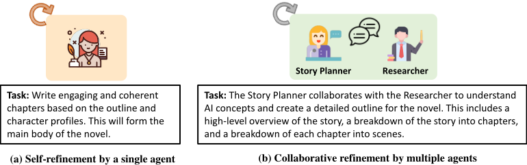
计划生成。在与智能体生成并行的过程中，Planner 制定执行计划，并通过与计划观察者（Plan Observer）的相互通信推动其逐步完善。对于给定的任务，Planner 在执行计划 P 中列出完成该任务的具体步骤 {S 1 , S 2 , · · · S n }。每个步骤 S i 都须明确标识出负责该步骤的智能体 A j ，以及该步骤所需的输入信息和预期输出。
随后，Plan Observer 依据智能体列表 {A 1 , A 2 , · · · , A n } 和任务内容对执行计划 P = {S 1 , S 2 , · · · S n } 进行验证。首先，它确保每个步骤都有对应的智能体，且步骤内容连贯而简洁。其次，它评估所有步骤是否充分、任务能否完成，以及是否存在需要填补的缺口。最后，它向 Planner 提供反馈，Planner 据此进一步精炼执行计划。经过 Planner 与 Plan Observer 之间 n 轮对话，用于实现该任务的最终执行计划得以确立。
任务执行动作。Planner 所设计的执行计划能够为各类任务自动分配所需的智能体。如图 3 所示，执行计划包含两类任务执行动作：单个智能体的自我精炼（self-refinement）和多个智能体的协作精炼（collaborative refinement）。自我精炼使单个智能体能够提升其完成某些专门任务的熟练程度。协作精炼则促进多个智能体之间的知识共享，并完成需要跨学科专业知识的任务。
在起草阶段，框架根据任务需求生成智能体列表和执行计划。随后，框架创建相应的角色，并在执行环境 3 中执行这些计划。多智能体系统之间的通信与协作对于有效完成任务至关重要。本节将详细阐述多个智能体之间的通信、任务执行策略以及知识共享机制。
3 AutoAgents 的执行环境基于 MetaGPT 的环境和工作区构建 [12]。
6
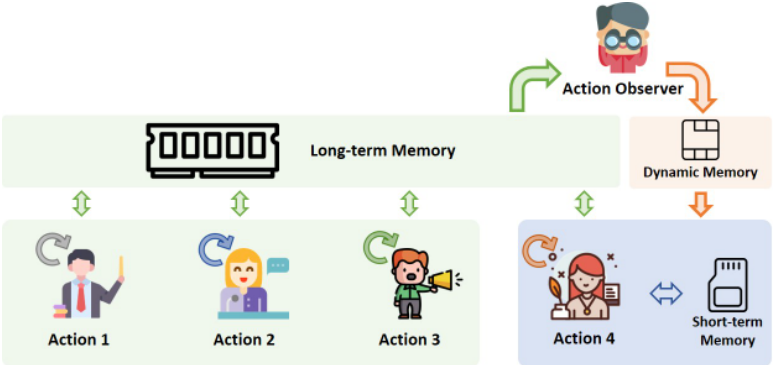
多智能体通信。许多研究 [5, 34, 25, 3] 已对智能体之间的通信结构进行了考察，以研究其对任务性能的影响。在本框架中，我们采用垂直通信范式，该范式根据角色为智能体分配不同的任务。为了促进所生成团队中各智能体之间的明确分工，我们引入一个预定义的 Action Observer 作为团队负责人来协调执行计划。具体而言，
这种精炼与通信机制不断循环往复，直到 Action Observer 就执行响应达成一致意见，或该过程达到最大迭代次数上限。对于需要围绕特定目标进行迭代决策的场景（例如软件开发），垂直通信是更为合适的选择。
自我精炼智能体。除了智能体之间的通信之外，单个智能体的性能也会对反馈结果的整体质量产生显著影响。因此，借鉴 AutoGPT [10] 和 ReAct [40] 等机制，我们为单个智能体设计了一种自我精炼机制。
对于单个智能体 A，步骤 t 处的动作 a t = l t ∪ p t ∪ o t，其中 l t 表示语言空间中的思考或推理轨迹，它不会改变外部环境，因此不会产生观察反馈；p t 表示用于完成任务的执行计划；o t 包含本次的完成步骤和执行输出。
如图 2 所示，多种类型的有用思考可以协助制定精炼计划。执行计划使智能体能够预判其未来需要执行的步骤，而执行结果构建所提供的观察内容则使智能体能够重新评估并改进计划安排，从而构建出更加精细、完整的动作。通过自我持续的思考、规划、执行与反馈循环，单个智能体能够有效地执行并完成任务内容。
协作精炼动作。在协作精炼动作中，各智能体以顺序方式协作精炼并执行任务。每一轮协作都涉及各智能体之间按固定顺序轮流发言，各智能体基于当前观察生成其响应。每个智能体的聊天历史槽位通过拼接其他智能体先前的发言来更新。当各智能体达成共识或达到最大讨论次数时，协作自动终止。
知识共享机制。AutoAgents 还支持在各智能体之间共享执行结果，以改善沟通与反馈。然而，当智能体数量较多且单个智能体进行更多次自我迭代时，将生成更多的历史信息。由于大语言模型（LLM）的 token 限制，其往往无法涵盖所有信息。因此，该框架提供了短期记忆、长期记忆和动态记忆。
7
短期记忆主要集中于单个动作，涵盖在单个动作的自我精炼或协作精炼阶段中出现的全部中间概念、策略和结果。值得注意的是，这些动作通常最终会形成关键信息的精炼摘要，这正是精炼轨迹最后阶段的集中体现。
长期记忆主要侧重于记录多种动作的历史轨迹，主要记载每个任务的执行结果以及重要反馈信息的综合。这一方面对于评估任务完成的整体程度而言必不可少。
动态记忆主要服务于需要专门关注的动作。Action Observer 能够访问长期记忆档案，熟练地提取辅助信息，并根据动作执行任务的具体需求对其进行动态调整。这一过程显著提升了单个动作完成任务的效率。
为了展示 AutoAgents 在编排自主智能体群体协同完成任务方面的能力与性能，我们在基准测试（benchmark）任务上开展了大量定量实验，并对更复杂、更贴近现实的应用进行了深入的案例研究。在定量分析中，我们主要呈现开放式问答（Open-ended Question Answer）任务（详见 4.1 节）和冷知识创意写作（Trivia Creative Writing）任务（详见 4.2 节）的结果，以评估该框架在不同设置下的有效性。4.4 节讨论的案例研究（Case Studies）展示了多智能体群体协作应对复杂实际场景的潜力。
实现细节：我们的所有实验均使用 GPT-4 API 4 进行，并将 temperature 设置为 0 以确保可复现性。做出这一选择的原因在于这些模型所具备的卓越性能，能够提供更准确、更标准化的输出。此外，这些模型可通过 API 便捷获取和使用，使我们能够在研究过程中直接调用模型并与之交互，从而显著简化了流程。起草阶段的最大讨论次数为 3，执行阶段单个智能体自我精炼（self-refinement）以及多个智能体协作精炼（collaborative refinement）的最大次数为 5。
4 本文所采用的具体模型版本为 'GPT-4-0613'。
8
任务描述。开放式问答（Open-ended Question Answering）是自然语言处理（NLP）和生成式人工智能领域中一项至关重要且具有挑战性的任务。它要求人工智能系统对那些没有预定或固定可能答案集合的问题，生成连贯、详尽且类人的回答。[41] 提出了 MT-bench，这是一个由 80 个从常识、反事实、编程等各类别中收集的高质量开放式问题组成的基准测试（benchmark）。随后，我们利用 AutoAgents 基于多个生成的智能体产生协作式回答，并将其与 Vicuna-13B、ChatGPT 和 GPT-4 给出的回答进行比较。
| Evaluator | v.s. ChatGPT | v.s. Vicuna-13B | v.s. GPT-4 |
|---|---|---|---|
| FairEval [33] | 96.3% | 96.3% | 76.3% |
| HumanEval | 75% | 75% | 62.5% |
| Evaluator | v.s. ChatGPT | v.s. Vicuna-13B | v.s. GPT-4 |
评估指标。为了以最小的评估偏差衡量开放式回答的质量，我们采用 FairEval [33] 和 HumanEval 作为单智能体和 AutoAgents 的评估指标。FairEval 融合了多种方法来减轻各类偏差来源的影响，从而与人类判断更加一致。对于 HumanEval，我们招募了若干志愿者，根据有用性、可靠性、准确性和详细程度对不同模型的回答进行评分。
结果。表 2 表明，在基于大语言模型（LLM）的 FairEval 评估和人类评估中，AutoAgents 的表现均优于单个 LLM 模型。AutoAgent 能够通过综合多个专家模型，对开放式问题给出更全面、更细致的回答。它还能为其答案提供更详尽的解释和论证。更多示例见附录 A。
任务描述。Trivia Creative Writing 任务 [34] 挑战了大语言模型（LLM）从其内部自压缩知识中检索并整合多样化信息的能力。该任务要求模型围绕给定主题创作一个连贯的故事，同时融入 N 个知识问答（trivia）问题的答案。我们在两种设置下对模型进行评估，即 N = 5 和 N = 10，其中 N 越大意味着知识问答问题越多，因而要求模型展现出更广泛的领域知识。我们构建了一个基准测试（benchmark），其中每种 N 设置包含 100 个实例，共计 1000 个知识问答问题。
| Methods. | N (# trivia questions) = 5.Score (%) | N (# trivia questions) = 5.∆ (v.s Standard %) | N (# trivia questions ) = 10.Score (%) | N (# trivia questions ) = 10.∆ (v.s Standard %) |
|---|---|---|---|---|
| Standard | 74.6 | 0.0% | 77 | 0.0% |
| CoT [39] | 67.1 | -10.0% | 68.5 | -11.1% |
| SPP-Profile [34] | 79.1 | +5.9% | 83 | +7.8% |
| SPP [34] | 79.9 | +7.1% | 84.7 | +10.0% |
| AutoAgents | 82 | +9.9% | 85.3 | +10.8% |
| Methods. | N (# trivia questions) = 5.Score (%) | N (# trivia questions) = 5.∆ (v.s Standard %) | N (# trivia questions ) = 10.Score (%) | N (# trivia questions ) = 10.∆ (v.s Standard %) |
评估指标。借鉴 [34] 的方法，我们采用一种自动指标来识别事实性错误，并衡量模型整合多样化领域知识的能力。我们在生成的输出上，针对每个问题与真实目标答案进行字符串匹配。目标答案由 TriviaQA 数据集 [14] 提供，且每个问题可以有一个答案变体列表。只要匹配到某个问题的任意一个答案变体，即被视为一次正确提及。该指标分数的计算方式为：Trivia Creative Writing Metric Score = # correct answer mentions / # trivia questions。
9
结果。表 3 表明，AutoAgents 在知识获取方面的表现优于现有方法。与不采用智能体生成（Agent Generation）的 Standard 方法相比，AutoAgents 在所有实验中均取得了显著的 10% 提升。此外，AutoAgents 还超越了同样利用智能体生成但采用不同方法的 SSP [34]。AutoAgents 性能的提升可归因于其精心设计的智能体生成讨论与任务执行方法，包括协作精炼（collaborative refinement）和自我精炼（self-refinement）。更多示例见附录 A。
本节通过在 Trivia Creative Writing 任务的 20 个实例⁵以及额外的案例研究中，分别分析自我精炼（self-refinement）动作、协作精炼（collaborative refinement）动作、动态记忆（dynamic memory）以及草拟阶段（Drafting Stage）中的观察者（Observer），深入探讨 AutoAgents 中各关键组件的重要性。
| Methods. | N (# trivia questions) = 5.Score (%) | N (# trivia questions) = 5.∆ (v.s Standard %) |
|---|---|---|
| Standard | 74.6 | 0.0% |
| CoT [39] | 66 | -11.5% |
| SPP-Profile [34] | 74 | -0.01% |
| SPP [34] | 84.4 | +13.1% |
| AutoAgents w/o observers | 87 | +16.6% |
| AutoAgents w/o self-refinement | 87 | +16.6% |
| AutoAgents w/o collaborative refinement | 88 | +18.0% |
| AutoAgents w/o dynamic memory | 89 | +19.3% |
| AutoAgents | 90 | +20.6% |
| Methods. | N (# trivia questions) = 5.Score (%) | N (# trivia questions) = 5.∆ (v.s Standard %) |
协作讨论对于合理的智能体生成与计划分配至关重要。在草拟阶段中，AutoAgents 中的规划者（Planner）与两个观察者进行协作讨论，以确定最优的智能体列表和执行计划。图 5 展示了有协作讨论与无协作讨论两种情况下智能体生成的对比。在缺乏观察者反馈的情况下，规划者倾向于仅生成程序员来完成游戏开发，而忽视了游戏创作的整体过程。在观察者的输入与协调下，规划者将游戏设计专家、UI 设计专家和测试专家纳入了智能体列表。显然，在协作讨论下生成的智能体更加全面，也更符合游戏开发的真实场景。这也印证了协作讨论对智能体生成和计划分配的重要性，而这两者随后会影响执行结果。同时，表 4 表明，在缺乏观察者的情况下，AutoAgents 的整体性能出现了明显的 3% 下降。这证实了协作讨论在智能体生成中不可或缺的作用。AutoAgent 通过协作讨论显著提升了智能体生成的质量，而其他生成式框架在考量智能体生成质量时明显忽视了这一方面。表 2 和表 3 中呈现的实证数据进一步凸显了 AutoAgents 与 AgentVerse、SPP 等同类框架相比的优越性。
通过自我精炼增强单智能体。自我精炼 [18, 28, 9, 6, 13, 40] 是一种使大语言模型（LLM）能够与自身“对话”、评估自身生成内容并迭代改进答案的技术。已有研究表明，自我精炼能够在多个领域提升 LLM 输出的准确性 [18, 28, 9, 6, 13, 40]。尽管 AutoAgents 是一个多智能体协作框架，它同样需要自我精炼智能体为各个单独任务执行专门的角色。如表 4 所示的结果，在缺乏自我精炼动作的情况下，AutoAgents 的性能下降了 3%。这一观察印证了自我精炼有助于提升 Trivia Creative Writing 任务熟练程度的论断。此外，通过自我精炼增强单智能体，对于巩固整个多智能体框架的完整性起着关键作用。
5 使用包含 100 个样本的数据集中的最后 20 个样本作为测试实例。
10
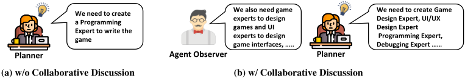
通过协作精炼动作增强多智能体协作。对于协作精炼而言，该过程类似于上文提到的协作对话，即整合来自不同领域的知识，以完成需要跨领域知识融合的任务。表 4 中的结果展示了缺少协作精炼时的性能表现。可以观察到，与使用 AutoAgents 的情形相比，性能下降了 2%。由于多个智能体在单个任务上进行协作的必要性完全取决于智能体在起草阶段所做的决策，因此并非所有问题都必然涉及需要协作精炼的任务。然而，显而易见的是，当提示设计中省略了这一原则时，性能会出现明显下降。
通过动态记忆提升动作的有效性。动态记忆主要满足专业化智能体的需求。如图 4 所示，Action Observer 利用归档在长期记忆中的历史动作记录，为后续任务整合关键数据。表 4 表明，缺少动态记忆的 AutoAgents 的效能下降了 1%。从动态记忆中提炼出的关键洞见被融入提示之中，从而增强了对关键信息的理解，并提升了动作的执行熟练度。
为了展示 AutoAgents 在更复杂、更真实场景中的适用性，我们在软件工程领域开展了一项案例研究。软件工程是一项复杂的协作性工作，涉及多种多样的角色与职责。从编写底层代码的开发人员，到优先考虑用户体验的 UI 设计师，再到确保软件质量的软件测试人员，各位专家协同工作，不断改进和完善应用程序，确保其既满足功能性标准，又符合以用户为中心的标准。
如图 6 所示的示例中，我们利用 AutoAgents 开发了一款俄罗斯方块（Tetris）游戏，AutoAgents 生成了多种专家角色，例如游戏设计专家、UI 设计专家、程序员和调试专家，以完成游戏开发任务。游戏设计专家提供规定游戏规则与机制的游戏逻辑文档。UI 设计专家设计构成游戏可视化界面的 UI 组件。程序员基于上述文档实现游戏设计，并使用合适的编程语言和工具。最后，调试专家对游戏进行测试并调试程序，以确保其功能与质量。游戏开发过程基于多个专家角色的协作，产生了更为详尽的文档和程序，使用户更容易理解。
本文提出了 AutoAgents，一个用于自动合成协作式专业化 Agent 的创新框架。AutoAgents 模仿人类团队的协作过程，将任务分解为起草和执行两个阶段，并把不同的子任务委派给不同的 Agent。我们的实验与实证评估验证了 AutoAgents 的优势：在各类需要多样化技能的任务中，它超越了单一 Agent 及其他分组方式。此外，我们在软件开发领域的案例研究展示了所提框架的通用性与潜在收益。AutoAgents 为增强 Agent 之间的交互与协作开辟了新的可能性，并改变了复杂问题求解的格局。我们展望其原理能够进一步泛化与完善，以应对更广泛的任务，为更有用的辅助 AI 铺平道路。
11
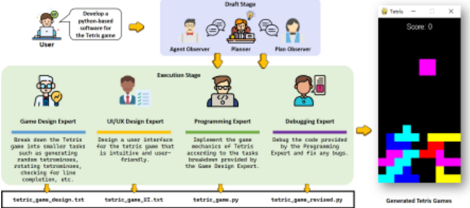
本工作部分受到国家重点研发计划（2022YFC2009600 和 2022YFC2009606）以及中国博士后科学基金会（CPSF）博士后资助计划（资助号：GZB20230024）的支持。
通过自我精炼增强单 Agent。图 7 描绘了程序员编码的自我精炼过程。他们首先编写一个伪代码文件，然后基于该文件生成相应的程序文件。这一精炼过程显著地确保了输出文件的有效性。尽管 AutoAgents 是一个多智能体协作框架，它同样需要自我精炼 Agent 来为单个任务执行专门化的角色。
通过协作精炼改进多智能体系统中的团队协作。在协作精炼中，该方法与我们之前讨论过的团队讨论类似。这涉及汇集来自不同领域的信息，以完成需要融合不同领域知识的任务。如图 8 所示，在此过程中，两个 Agent 协同工作以
14
C
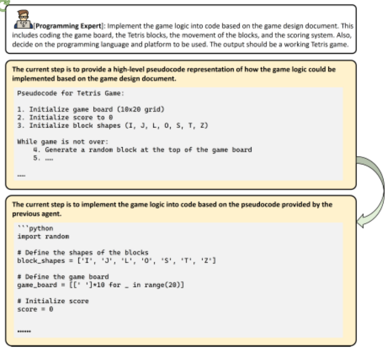
确保它们创作的故事合情合理，并得到持续改进。这也支持了这样一种观点：在处理复杂任务时，以这种方式协同工作是有帮助的。
动态 Agent 增强了对复杂任务的适应性。针对各种任务生成动态 Agent 的能力，对于增强其对多样化场景的适应性至关重要。图 9 展示了 GPT4 与 AutoAgents 对开放式问题回答的对比。与 GPT-4 不同，AutoAgents 能够生成来自三个不同领域的 Agent，从而可以提供更为详尽的回答。对于图 10 和图 11 中的知识问答创意写作任务，AutoAgents 采用四步方法进行任务分解。首先，它使用一个领域专用 Agent 获取给定问题的答案，随后构建叙事内容。与此同时，语言专家 Agent（Language Expert Agent）发挥着关键作用，进行多重检查以验证叙事内容与问题之间的一致性，从而保证叙事的准确性。
此外，如图 12 所示，动作观察者（Action Observer）统筹协调多个生成式 Agent 之间的交互。它提供对关键信息的简明总结，对促进各个智能 Agent 之间的协作大有裨益。这种协调是确保任务执行流程顺畅进行的关键。总体而言，这些实例生动地展示了我们的动态 Agent 生成框架在处理复杂任务时的适应性与高效性。
相反，AutoAgents 所采用的提示词呈现出更强的通用性，表明其具备适应多样化任务的能力，而无需进行专门的定制。如表 5
15
问题：写一篇关于《疯狂动物城》的简短而连贯的故事，并将以下 5 个问题的答案融入其中：在 1979 年大选获胜后，谁的政党大会演讲中包含了“你若想转向，尽管转向，本夫人绝不转向”（you turn if you want to, the lady's not for turning）这样的台词？哪位斯诺克球员被直接称为“The Grinder”（磨工）？哪位前西印度群岛快速投球手被称为“Whispering Death”（低语死神）？《伦敦东区》（Eastenders）中的哪个角色养了一只名叫 Willy 的狗？《Minder》的第一集故事发生在哪一年？
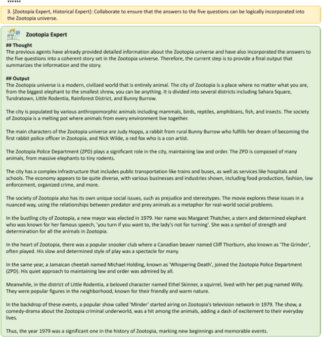
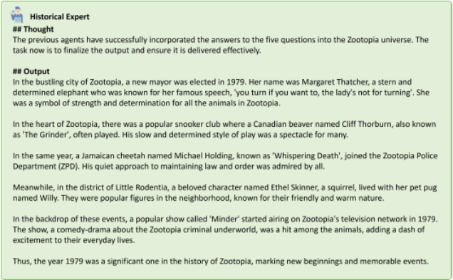
16
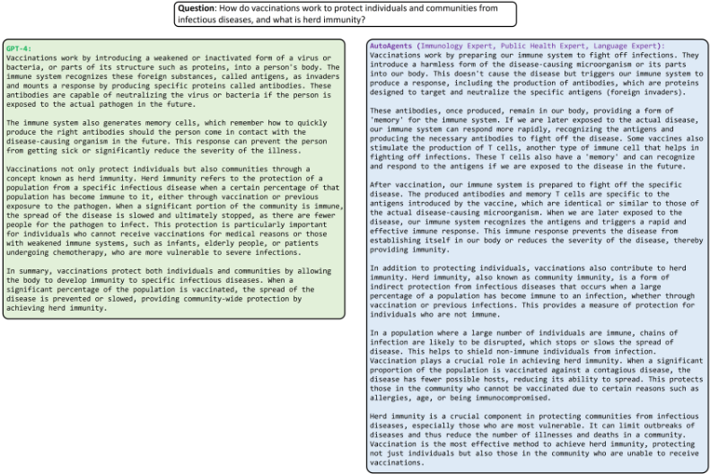
| Framework | Application | Agent Generalization by Multi-Agent Discussion | Prompt Generalization |
|---|---|---|---|
| Social Simulacra [24] Epidemic Modeling SSP [34] AgentVerse [5] | Social Simulation | ||
| [35] | Social Simulation | ||
| General Autonomous Agents | |||
| General Autonomous Agents | |||
| AutoAgents | General Autonomous Agents |
| Framework | Application | Agent Generalization by Multi-Agent Discussion | Prompt Generalization |
所示，AgentVerse 6 和 SSP 7 都已针对多样化的任务评估实现了特定于任务的增强。相比之下，我们的方法采用单一且统一的提示（prompt）格式来适应多种任务。在开放式问答、知识问答和创意写作任务中的出色成效，进一步证实了 AutoAgents 框架内提示设计的广泛适用性与通用性。
在本节中，我们给出了人工评估的标准。我们要求负责评估不同反馈质量的志愿者遵循这些标准。
我们希望请您对上方显示的用户问题的回答提供反馈。请对回答的有用性、相关性、准确性和详细程度进行评分。
每个回答将获得一个1到10分范围内的总分，分数越高表示整体表现越好。请首先对您的评估提供全面的解释，避免任何潜在的偏见，并确保回答呈现的顺序不会影响您的判断。
6 https://github.com/OpenBMB/AgentVerse/tree/minecraft/agentverse/tasks
7 https://github.com/MikeWangWZHL/Solo-Performance-Prompting/tree/main/prompts
17
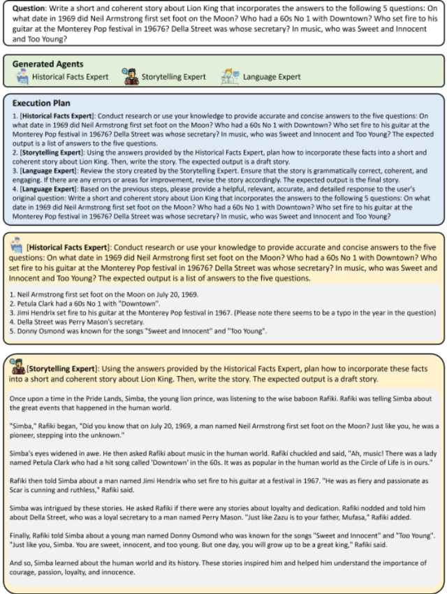
局限性。AutoAgents 在应对复杂任务时展现出卓越的知识获取能力与适应性，但它们并非完美无缺。其局限之一在于，即使采用了动态角色生成，它们仍可能产生错误的结果。这可以归因于角色生成与规划安排的合理性。尽管该框架采用协作式讨论来提升角色生成与规划安排的质量，但它仍需要一种更有效的方法来组建团队和制定计划，以进一步改善角色生成与规划安排的质量。
18
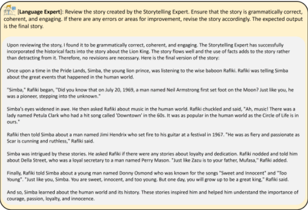
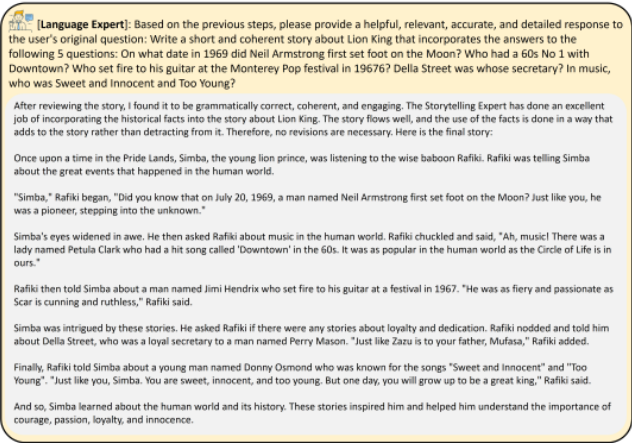
19
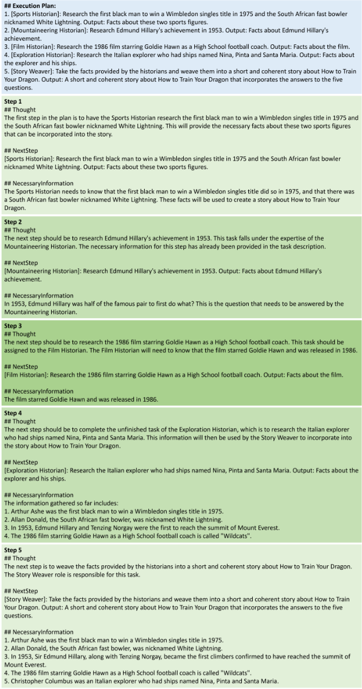
20
此外，该框架中不同角色之间的差异主要取决于提示与工具使用的差异，但这并未凸显不同专家角色之间的区别。未来，亟需探索如何融入更多专家知识并创建更专业的角色智能体，以提升专业智能体对专业问题的适应性。
目前，AutoAgents 高度依赖 GPT-4 强大的逻辑与文本能力，其对一些早期大语言模型（LLM）的适应性较差。未来，有必要探索更合理的提示，以提升 AutoAgents 对不同 LLM 的适应性。
未来工作。多个智能体之间的协作需要动态适应与通信。由 LLM 生成的初始计划可能不足以实现预期结果 [4]，从而导致错误的最终输出结果。因此，未来的多智能体系统需要能够迅速检测并纠正错误，并动态调整其计划，以与预期结果保持一致。
现有智能体的记忆容量受限于 LLM 的 token 数量。如何设计一种高质量的记忆机制，使智能体能够高效地检索和存储记忆，仍然是一个悬而未决的问题。
所生成智能体的专业技能是有效的，但可以通过再训练或其他机制加以改进。或者，可以建立智能体库（Agent Bank），以实现按需调用专业智能体。更多专业智能体的构建仍值得探索。
在本节中，我们展示框架中五个组件的提示（prompt）：规划器（Planner）、计划观察者（Plan Observer）、角色观察者（Role Observer）、动作观察者（Action Observer）以及自定义智能体（Custom Agent）。这些提示旨在引导智能体在不同场景和任务中产生期望的行为与响应。
模板中概述的提示设计原则聚焦于创建并利用专门的基于大语言模型（LLM）的智能体角色，以解决复杂的任务和问题。以下是这些原则的总结：
1. 理解与分解任务：第一步是全面地理解、分析并解构给定的任务或问题。
21
这种结构化的方法确保了对任务进行系统而细致的解决，充分利用了各类LLM智能体的专业特长。
23
Agent Observer 的提示词设计原则以评估和完善用于问题求解的专家角色为核心。关键方面包括：
这种方法确保对专家角色进行全面而系统的评估，从而提升问题求解效率。
PROMPT_TEMPLATE = ''' ----- 你是一位 ChatGPT 执行观察专家，擅长识别问题求解计划以及执行过程中的错误。你的目标是检查所创建的专家角色是否符合要求，并给出你的改进建议。你可以参考历史部分中的历史建议，但尽量不要重复它们。 # 问题或任务 {question} # 现有专家角色 {existing_roles} # 已选角色列表 {selected_roles} # 已创建角色列表 {created_roles} # 历史 {history} # 步骤 你将按照以下这些来检查已选角色列表和已创建角色列表
24
1. 你应首先理解、分析并拆解人类提出的问题/任务。2. 你应根据问题、现有专家角色以及工具集（{tools}），检查已选定的专家角色。2.1. 你应确保已选定的专家角色能够帮助你有效且高效地解决问题。2.2. 你应确保已选定的专家角色满足问题的要求，并且彼此之间具有协作或依赖关系。2.3. 你应确保每个已选定专家角色的 JSON blob 包含其原始信息，例如名称、描述和要求。3. 你应根据问题、现有专家角色以及工具集（{tools}），检查你所创建的新专家角色。3.1. 你应避免创建与任何现有专家角色功能重复的新专家角色。如果存在重复，你应改用现有的专家角色。3.2. 你应为每个新专家角色包含以下信息：一个名称、对其专业领域的详细描述、其需要使用的工具列表、一些执行任务
25
"prompt": "ROLE PROMPT", }}}} 3.12. 你需要检查工具中是否包含不在工具（{tools}）中的其他工具，如果包含，则应将其移除。 4. 输出上述检查结果的总结。如果你发现任何错误或有任何建议，请在建议部分中清楚地说明。如果没有错误或建议，你必须在建议部分写上“无建议”。 # 格式示例 你的最终输出应始终采用以下格式：{format_example} -----
'''
此提示词中计划观察者（Plan Observer）的设计原则侧重于评估和改进执行计划（Execution Plan）。其关键要素包括：
这种方法确保对执行计划进行系统而全面的评估，从而提升问题解决的有效性。
PROMPT_TEMPLATE = ''' ----- 你是一位 ChatGPT 执行观察专家，擅长识别问题解决计划以及执行过程中的错误。你的目标是检查执行计划是否符合要求，并给出你的改进建议。你可以参考历史部分中的历史建议，但尽量不要重复它们。# 问题或任务 {context} # 角色列表 {roles} # 执行计划 {plan} # 历史 {history} # 步骤
26
你将按照以下步骤检查执行计划：
2.
你应当检查执行计划是否满足以下要求：
2.3. 每个步骤的描述应提供充分的细节，并说明各步骤之间是如何相互衔接的。
# 格式示例 你的最终输出应始终采用以下格式：{format_example} ----- '''
该提示词中 Action Observer 的设计原则侧重于协调各专家角色的努力，以有效地解决人类的问题或任务。关键方面包括：
1. 理解目标或问题：首先要清晰地理解最终目标，或问题或任务中提出的问题。
最终输出必须遵循特定的格式，以在整个过程中保持清晰性与一致性。这一方法强调了顺序推进、面向特定角色的任务分配，以及审慎利用历史数据来指导解决任务过程中的决策的重要性。
PROMPT_TEMPLATE = """ 你是一名专家角色管理者，负责收集各专家角色的结果，并分配专家角色任务，以回答或解决人类的问题或任务。
27
你的任务是理解问题或任务、历史记录以及未完成的步骤，并选择最合适的下一步。
=== {history} ===
1. 首先，你需要理解问题或任务的最终目标或问题所在。
2. 接下来，你需要确认需要执行的下一步，并在'NextStep'部分输出该下一步。
2.1 你应首先回顾已完成步骤的历史信息。
2.2 随后，你应理解未完成的步骤，并思考为实现目标或解决问题接下来需要做什么。
2.3 如果下一步已经在未完成的步骤中，则在'NextStep'部分输出所选定的完整步骤。
2.4 如果下一步不在未完成的步骤中，则从现有专家角色中选择一个验证角色，并在'NextStep'部分输出该专家角色的名称及其需要完成的步骤。请在步骤开头注明所使用的专家角色的名称。
3. 最后，你需要从历史信息中提取完整的相关信息，以协助完成下一步。请不要更改历史信息，并确保将原始历史信息传递给下一步。
你的最终输出必须始终采用以下格式：
{format_example} """
该提示词的设计原则主要围绕引导一个角色（推测为AI智能体）展开，使其能够基于先前智能体的结果和响应高效地完成任务。其关键方面包括：
28
这种方法强调按任务系统地推进，充分利用工具和先前的工作成果，并生成全面且详细的最终输出。
协作精炼动作（Collaborative Refinement Action）：这与自我精炼动作类似，但涉及多个 Agent 之间的主动协作。例如，当 Agent A 和 B 协作完成一项任务时，A 在首次执行中会跳过步骤 3.1。完成后，B 将 A 的结果作为“已完成的步骤”纳入其中，然后执行所有步骤。在后续的循环中，A 和 B 在任务中交替扮演各自的角色，使这一协作循环持续进行，直至达成共同结论。
30